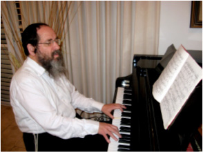
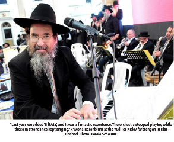

The Alter Rebbe’s Niggunim: Melodies for the Soul
In an exclusive interview with the Beis Moshiach Magazine, Chassidic conductor and composer R’ Moshe Mordechai (“Mona”) Rosenblum speaks about his childhood (“My mother gave me an accordion when I was four and a half years old”), the uniqueness of Chabad niggunim (“Every time I hear the Alter Rebbe’s niggunim, I feel as if I’m listening to them for the first time”), producing CDs of Chabad niggunim (“It’s slow and painstaking work, as it’s not easy to put the emotions into distinctive vessels”), and his family connection with the Alter Rebbe.

This past Yud-Tes Kislev, from seven o’clock in the evening until the wee hours of the morning, R’ Mona (Moshe Mordechai) Rosenblum stood on the rostrum along the eastern side of the Beis Menachem Synagogue in Kfar Chabad. In his right hand, he waved his conductor’s baton, urging on the singers, and through them, the thousands in attendance. The joy pierced the heavens as great excitement filled the air. It’s true that this event also took place last year and the year before that. However, the unique environment and the tremendous emotion that engulfed everyone present were so fresh as if they were experiencing it for the very first time.R’ Mona, age sixty-two, is a leading figure in the world of Chassidic music. A humble and modest Jew, he devotes considerable hours each day to Torah study. Someone meeting him for the first time would find it hard to believe that this is a person associated with some of the biggest hits in Chassidic music, alongside his dozens of other musical productions. Together with his work in the music field and his time spent immersed in Torah and t’filla, he hosts a special radio program each Friday on the chareidi “Kol B’Rama” station. Hundreds of thousands of people tune in each week for some Erev Shabbos atmosphere filled with stories, vertlach, and lively music.
An interview with R’ Mona is not an ordinary experience. Actually, it was more like a farbrengen or Torah discussion. First of all, we asked R’ Mona to tell us how it all began. “My mother a”h was the one who pushed me into the world of music,” he recalled fondly. “When I was four and a half years old, she gave me a small six-bass accordion to keep me occupied, and the melodies have enraptured me ever since.” Nevertheless, he didn’t agree so quickly to take up music. “She told me that I would want to learn in time, and she sent me to music teachers who said to my parents: You have a marvelous child…”
At the age of five and a half, he learned to play piano, guitar, and wind instruments at the new Anazagi Conservatory in Ramat Gan. “I learned accordion with a music teacher over a period of several months. With the passing years, I achieved a tremendous breakthrough, and the rest is history.”
Rosenblum has participated in countless performances during his life. Despite this – or perhaps as a result – he looks upon the central Yud-Tes Kislev farbrengen as one event that he simply cannot miss. He then brings a Chassidic story to illustrate his point on how to relate to this grand gathering. “I had a very close connection with the previous Nadvorna Rebbe, R’ Yaakov Yisachar Dovber, of righteous memory, who passed away about a year and a half ago. He once said that since we aren’t able to offer sacrifices after the destruction of the Beis HaMikdash, ‘anyone occupied with the Biblical portion of the burnt offering is considered as if he offered a burnt offering.’ Our Sages of blessed memory also say regarding the pasuk ‘Let us render [for] bulls [the offering of] our lips’ that reciting the texts of the sacrifices is considered before G-d as if we offered them. Some siddurim contain the following: ‘May this recitation be considered before You as if we offered [a sacrifice].’ Not an actual offering, but ‘as if,’ an alternative.
“The Nadvorna Rebbe also said that there’s only one avoda left for us today – not as an alternative – and that’s the avoda of song and joy, which serves as a means for connecting to Alm-ghty G-d. In this manner, I express myself at the traditional Yud-Tes Kislev farbrengen in the finest Chabad tradition and with a large choir. Connecting to the Creator at this special hour through joy and the singing of Chabad niggunim is deeply moving.”
The renowned conductor tells Beis Moshiach: “On a personal level, I have a connection to Yud-Tes Kislev. Although I was raised in a Gerer Chassidic home, my wife is a tenth generation descendant of Baal HaTanya, the Alter Rebbe. The event’s master of ceremonies, Rabbi Dov Halperin, is my wife’s cousin, and I am privileged that my children are also descendants. Some of my children also appear in Seifer HaTze’atza’im.”
Do you feel something special at such an event, more than what you feel at a standard performance?
He laughs. “No performance is standard. I connect with each one of them. However, to tell you the truth, at this great traditional farbrengen I feel something special in the air. The very fact that we’re talking about a gathering of Jews joining together to sing and praise G-d is something quite stirring. This is especially so regarding the nature of the gathering and when the joy is achieved through holy niggunim. Take for example ‘The Niggun of Four Stanzas,’ composed by the Alter Rebbe himself. This is a very special niggun that is not sung on normal occasions, and I simply can’t explain in words what this niggun elicits. Such a musical composition coming from a great and holy man creates an inner spiritual upheaval. There can be no doubt that during those moments when someone sings or hears this niggun, especially at such a Chassidic gathering, he reaches a state of tremendous spiritual elevation towards greater t’shuva,” R’ Mona describes with intense excitement.
There are other niggunim for which he has tremendous praise. “Every time they sing ‘E-li Ata’ or ‘Tzama Lecha Nafshi’, it sends shivers up my spine. These tunes are so moving. Whenever and wherever I hear Jews singing these niggunim, my heart feels a deep surge of emotion. This also happens when they sing ‘Pada V’Shalom,’ especially at the joyous conclusion. At that moment, everyone reaches a state of spiritual ecstasy as the niggun builds in intensity. These are very thrilling moments for me,” reveals R’ Mona.
THE ALTER REBBE’S NIGGUNIM REACHING THE VERY HEIGHTS
As per his custom, he begins to elaborate on the subject he had just been discussing. “On the one hand, since we have a connection to Yiddishkait and Chassidus, why are we getting so excited? Every day, I say Modeh Ani, daven, and accept the yoke of Heaven, so what is this tremendous emphasis on listening to a niggun?”
R’ Mona proceeds to explain in the sing-song of studying Gemara: “Anyone who has heard my radio program understands that I have never gotten used to the Alter Rebbe’s niggunim. Every time I hear them, it’s like a first-time experience. Furthermore, the point is that it’s not just me, an ultra-Orthodox Jew, who is inspired by them; non-Torah observant Jews are as well. I see them coming to the celebrations, yet it begs the question: Why all the excitement? However, when I look at the simcha on their faces as a result of the Chassidic melodies, I am simply overcome. I am captivated as I watch how they dance in a state of sheer delight. Sometimes, it can end as with the maidservant at the parting of the sea, who remains a maidservant even after the Divine revelation. However, there are also times when the maidservant undergoes a vast transformation. This too can happen.
“In essence, it’s quite clear that this is where things will lead,” he emphasized most fervently. “When I see how such people experience this spiritual elevation, losing all connection to their own existence, comparable to how great tzaddikim relate to their Father in Heaven, this is something truly Divine. I can tell you unequivocally that I have never seen such things anywhere else. In my opinion, there are several components here: First and foremost, you have the niggunim themselves. However, the niggun requires the correct environment and the correct time – and a farbrengen on the auspicious day of Yud-Tes Kislev is such a time. Combining the day, its meaning, a large assembly of Jews, and the niggun – is one all-encompassing package. That’s how I see it.”
During the central farbrengen in Kfar Chabad, R’ Mona primarily uses niggunim with a connection to the holy day of Yud-Tes Kislev. Yet, he also reveals that although such events are repeated year after year, “I try each time to add a little flavor. Last week, for example, we added ‘E-li Ata,’ and it was a fantastic experience. The orchestra stopped playing while those in attendance kept singing. This year, in coordination with the organizers, I added another niggun or two that we hadn’t used at previous farbrengens – the Rosh Chodesh Kislev niggun and the niggun of the Tzemach Tzedek’s students that has been used considerably during the past year in a wide range of functions.”
R’ Mona knows exactly what niggun to play. “I have a special folder for such an evening; all the appropriate material has been prepared in advance,” he says, although he can’t be certain how long each melody will take. “It’s spontaneous. The niggunim are always sung longer than I had planned, and I have no problem with that. I go with the flow.”
THE HOLY MEANING OF NIGGUNIM IN LUBAVITCH

R’ Moshe Mordechai Rosenblum lives in a central ultra-Orthodox community and declares proudly that he learns Chassidus. “I try to learn the holy Tanya regularly,” he asserts.Over the years, he has produced several CDs of Chabad niggunim with great toil and effort. “I think that Chabad niggunim are very distinctive in nature. In fact, I have always been fascinated by how Chabad Chassidim relate to each individual niggun in a most unique manner. Translating the melody in terms of the celestial worlds of Atzilus, Beria, and Yetzira, etc. seems a bit strange to me. There is no doubt that Lubavitch treats these niggunim as something holy, a phenomenon generally not seen in other places.”
We resumed our discussion of his production of the CDs: “This was slow and painstaking work,” he said, “since it required putting emotions into vessels. We tried to give a sense of meaning to the music, and with G-d’s help, we received good results through our considerable efforts.”
Just before running back to his shtender to grab another page of Gemara, we asked him to tell us a story to conclude our interview:
“I had a close relationship with Rabbi Moshe Gedalya Halperin, of blessed memory, a Lubavitcher Chassid whom I had known since my childhood. I tended to him when he was much older, after he had taken ill. I will never forget those moments shortly before his passing fifteen years old, as he lay on his sickbed. One of his brothers suddenly began to sing the ‘The Niggun of Four Stanzas’ quietly, as Shma Yisroel and the Vidui was being said at that moment. Within a few seconds, all those in the room, with tears in their eyes, joined the singing. This was a sight that I’ll never be able to forget. I remember how even the deceased suddenly appeared quite serene. It was as if he fell asleep with a smile on his lips.”
I meant that you should conclude with a happier story, I noted.
R’ Mona smiled warmly. “A story like this, about a man who passes away with such a holy niggun, is not sad at all. I am certain that from R’ Moshe Gedalya’s vantage point, the occasion of passing from this world to the eternal world to the sound of these holy melodies was indeed a happy one…”
Cite this article
Mordechaisegal. "The Alter Rebbe’s Niggunim: Melodies for the Soul." Beis Moshiach, no. 906 (December 9, 2013).